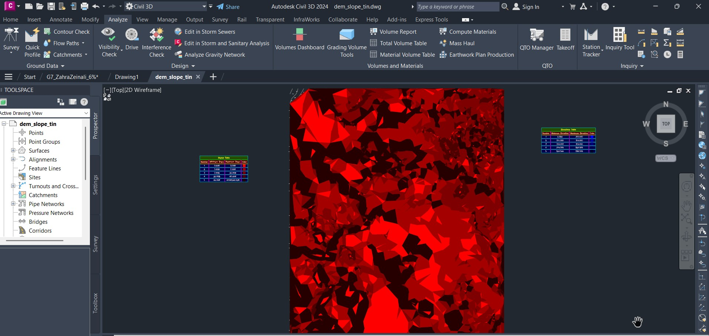

توضیحات پروژه ششم
 |
||
1403/7/16 |
اصول نقشه برداری |
دکتر عباس عابدینی |
توضیح |
در قالب یک پروژه نقشهبرداری، به استخراج و ترسیم خطوط میزان و نقشه شیب زمین پرداختم و با بررسی دادههای ارتفاعی، اصلاح و بهبود آنها را انجام دادم. هدف این پروژه، نمایش دقیق تغییرات ارتفاعی و شیب سطح زمین و تهیه نقشهای مناسب برای تحلیل توپوگرافی بود. این تجربه باعث تقویت مهارتهایم در تحلیل دادههای ارتفاعی، تهیه نقشههای توپوگرافی و پردازش اطلاعات مکانی شد |
|